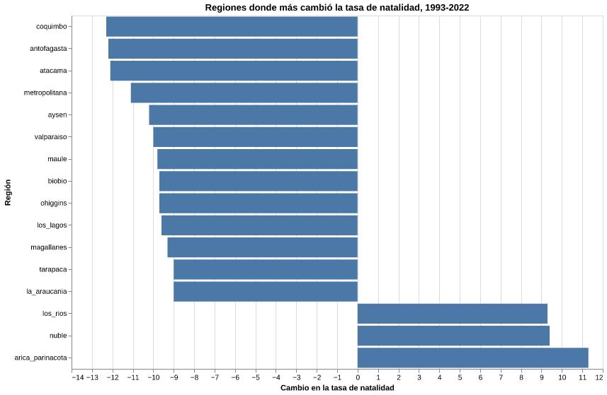

<DOCTYPE html>

</DOCTYPE>
<html lang="es">

</html>
<head>

</head>
<meta charset="UTF-8"> 
<meta name="author" content="Isidora Infante">
<meta name="description" content=""Análisis de la Natlidad en Chile, según las regiones">
<title>
>Natalidad en Chile</title
<head/>
<body>
<h1>La natalidad en Chile: una trasnformación territorial
   </h1>
    <header>
    </header> 
 
</body>

</html>
<div>

<h2>Introducción</h2>
<p>
    Durante las últimas décadas la natalidad en Chile ha disminuido de manera sostenida. Sin embargo, esta caída no ocurre igual en todas las regiones del país. 
    Algunas zonas presentan comportamientos diferentes que permiten observar cambios territoriales y demográficos en los nacimientos. 
</p>
</div>

<div>
    <h2>Crónica</h2>
    <p>
        En las últimas décadas, la natalidad en Chile ha experimentado una disminuición sostenida. 
        Sin embargo, esta tendencia no se ha manifestado de manera uniforme en todo el territorio. 
    </p>
    <p>
        Al analizar los datos por región, aparecen diferencias que permiten entender que el fenómeno no solo implica una baja general de nacimientos. 
    </p>
    <p>
        A partir del trabajo con la base de datos de nacimientos por región y año, se realizó una revisión inicial de las variables disponibles. 
    </p>
    <p>
        En una primera etapa se observaron los nacimientos y la tasa de natalidad en el tiempo, confirmando una caída general en ambos indicadores. 
    </p>
    <p>
        El análisis muestra que la baja de la natalidad no puede entenderse únicamente como una disminuición de nacimientos, sino también como una trasnformación demográfica y territorial. 
    </p>
    <p>
        Al ver el gráfico, las priemras tres regiones nos da un indicio que las regiones del norte se comportan de cierta manera. Por lo tanto, incide en el porcentaje de madres extranjeras, donde la migración está incidiendo en el comportamiento de la maternidad. 
    </p>
</div>


<div>
<h2>Visualización</h2>

</div>
<p>
    El gráfico muestra las regiones donde la tasa de natalidad presentó los mayores cambios entre 1993 y 2022. Se observa una disminuición importante en gran parte del país, aunque con diferencias entre regiones. 
</p>

<div>
    <h2>Principales hallazgos</h2>
    <ul>
        <li>La natalidad disminuyó en todo Chile.</li>
        <li>Las regiones presentan diferencias importantes.</li>
        <li>La migración influye en la composición de los nacimientos.</li>
        <li>Las regiones del norte muestran características particulares.</li>
    </ul>
</div>

<p>
    Fuente de datos: 
    <a href="http://www.ine.gob.cl" target="_blank">
        Instituto Nacional de Estadísticas
    </a>
</p>

<footer>
    <p>
        Trabajo realizado por Isidora Infante para Narración Gráfica de No Ficción.
    </p>
</footer>

